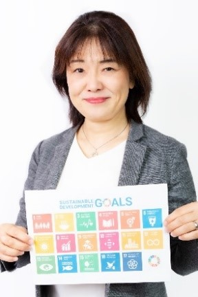

脱炭素社会に向けた取り組みが国内でも急激に進んでいます!
2050年カーボンニュートラルの実現に向けて、中小企業においても、脱炭素に向けた取り組みが求められています。脱炭素社会の実現は、SDGsとの関連も強く、グローバル展開している企業だけでなく、すべての企業にとって重要なテーマです。脱炭素への取り組みをきっかけに、新しい市場を開拓している企業もあり、脱炭素経営は、新たなビジネスへの可能性を秘めております。
このセミナーは、これから脱炭素への取り組みを考えたい企業向けの、脱炭素に関する入門講座です。脱炭素経営に取り組む最初の1歩として、是非この機会にご参加下さい。
日程
◆セミナー◆
日 時：令和5年3月24日（金）14:00 ～ 16:00
会 場：敦賀商工会館 6階ホール
受講料：無料
定 員：30名
概要
- SDGs／脱炭素を取り巻く５つの背景
- SDGsの基礎知識
- 気候変動の現状を知ろう！脱炭素、世界の常識・日本の常識
- SDGs／脱炭素への取り組み事例
- 企業がSDGs／脱炭素に取り組む５つのメリット
- ミニワークショップ（自社のSDGsへの取り組みを考えよう）
講師：株式会社グリーゼ 代表取締役 社長
「SDGs de 地方創生」公認ファシリテーター 福田(ふくだ) 多美子(たみこ) 氏
「SDGs de 地方創生」公認ファシリテーター 福田(ふくだ) 多美子(たみこ) 氏

株式会社富士通ターミナルシステムズ（現、株式会社富士通フロンテックシステムズ）にて、金融／流通ターミナル系ソフトウェアの取扱説明書の開発・執筆に従事。フリーライターを経て、2004年に株式会社グリーゼに入社。代表取締役としてWebマーケティングに関するコンサルティング、コンテンツ制作、研修等を行う。「世界一やさしい Webライティングの教科書 1年生」など著書５冊がある。現在は、SDGsに関するコンサルタントとして活動。企業向けのSDGs導入支援コンサルティング、コンテンツ制作、社員研修などを行っている。SDGsカードゲームを取り入れたワークショップは、SDGs研修としても、チームビルディング研修としても人気。SDGs／サステナビリティに関する資格・認定も豊富。
- SDGsビジネスコンサルタント(一般社団法人SDGs支援機構)
- 「SDGs de 地方創生」公認ファシリテーター
- 「SDGsアウトサイドイン」公認ファシリテーター
- 「SDGs学習ゲームGet The Point」公認ファシリテーター
お問い合わせ・お申し込み先